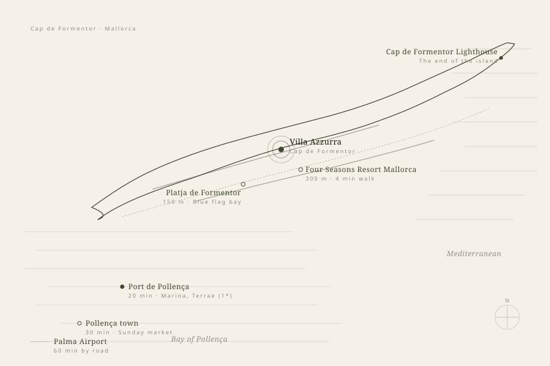

Properties • Spain • Mallorca • Cap de Formentor
A contemporary four bedroom villa, three hundred metres from the Four Seasons.
The Setting
Cap de Formentor is the spur of cliff and pine that finishes the north of Mallorca. It is the part of the island that has drawn writers, monarchs and discreet wealth for the better part of a century, and the part that has stayed quietest. Where the rest of the coast leans toward the marina or the village, the Cap leans toward the sea.
In 2024 the Four Seasons Resort Mallorca at Formentor reopened on the headland, the 1929 grande dame restored and listed at number twenty four on the World’s Fifty Best Hotels within months. The road that runs past the resort runs past Villa Azzurra three hundred metres later. One hundred and fifty metres the other way is the blue flag sweep of Formentor Beach itself.
It is a quiet address by design. Port de Pollença, with its moorings and a newly starred table in the port, sits twenty minutes back along the peninsula. The cycling climb that finishes at the lighthouse is one of the most photographed in Europe. The rest is pine, water and the kind of stillness that makes the rate make sense.
The House
A sixteen metre saltwater infinity pool, an open plan kitchen and dining room that spills onto a covered terrace, and four double bedrooms (three en suite, the fourth served by a private adjacent bathroom) framed by the Mediterranean pines that give this coast its character.
The orientation is south west across the bay, which means the light moves through the house all day and lands on the terrace in the late afternoon. The pool sits below the main level on its own platform, with a Balinese daybed at one end and the headland on the other.
The villa is registered for short term rental in the Balearics under licence ETV 5388.
Bedrooms
Four
Three en suite, one with private adjacent bathroom. Doubles throughout.
Pool
16 Metres
Saltwater infinity, facing the Bay of Pollença.
To the Beach
150 Metres
Formentor Beach, blue flag, on the protected northern coast.
To the Four Seasons
300 Metres
Resort Mallorca at Formentor, reopened 2024.
The Neighbourhood
Step out of the gate and turn left for the Four Seasons. Walking along the coast road takes about four minutes to reach the resort gardens. Beyond it the road climbs to the lighthouse at the tip of the peninsula, an hour by foot or twenty minutes by car, with the pine forest dropping away to either side.
Right out of the gate, the path drops to Formentor Beach itself in under three minutes. The beach is blue flag, the northern face of the cap, and it is rarely as busy as Pollença Bay further west. The Hotel Formentor beach club sits at the western end and takes table reservations from villa guests.
Inland, twenty minutes by car puts you in Port de Pollença for moorings, a Michelin-starred kitchen and the first of the long beach restaurants. Palma is a little under an hour and the drive is one of the better ones on the island.
The Peninsula
A nine kilometre finger of limestone and pine pointing north east into the Mediterranean. The Tramuntana range shelters the southern flank, the Bay of Pollença cradles it from the west, open sea on the north. Villa Azzurra sits where the road runs out and the pine takes over.

Formentor Beach
150 m
Four Seasons
300 m
Port de Pollença
20 min
Cap Lighthouse
25 min
Palma Airport
60 min
Inside
The interior runs as a single open volume from the kitchen through the dining and living rooms to the terrace doors. Bedrooms sit off a side passage, separated from the main living area by a short corridor that takes the daytime sound out of them.
The kitchen is fully equipped and fitted for a private chef where one is engaged. There is a Sonos system across the principal rooms, working WiFi on the terrace, and two parking spaces inside the gate.
Rates 2026
All rates are weekly and inclusive of final cleaning, pool maintenance, garden maintenance and mid stay housekeeping. Longer stays by arrangement.
Shoulder Season
June · September · October · Seven night minimum
Peak Season
July · August · Fourteen night minimum
Low Season
November to May · Five night minimum
A refundable damage deposit of €3,500 is held against each booking. Peak stays carry an enhanced housekeeping schedule of three cleans per week. Concierge, private chef, transfers, boats and guides on application.
At the Table
The covered terrace seats ten comfortably and twelve at a stretch, and is where most guests end up taking dinner. We work with a small group of private chefs on the island and can arrange a single dinner, a week of breakfasts and dinners, or a full programme that includes a market trip the morning of arrival.
For a table off the property, Port de Pollença holds the closest Michelin-starred kitchen and the Hotel Formentor beach club sits on the bay below the villa.
How the Villa is Held
Behind the day-to-day, the villa is held by a small roster of partners we keep on quiet call. Transfers move from Palma airport by car, helicopter or boat, with vetted drivers we hold accounts with across the island. Concierge access to the Four Seasons next door covers spa treatments, dinner at Shima or Mel, and a tender pickup from Port de Pollença.
For guests who require it, our sister company Sangnoir provides discreet close protection, advance risk assessment, residence security and medical readiness. The work is designed to stay out of view, the villa to stay felt rather than guarded, and the week to run frictionless from arrival to departure.
How to Enquire
Villa Azzurra takes a small number of weeks each year through ProLuxe Travel directly. Enquiries are handled by Myles personally. Availability moves quickly in the shoulder months and we recommend reaching out at least twelve weeks ahead for a summer stay.